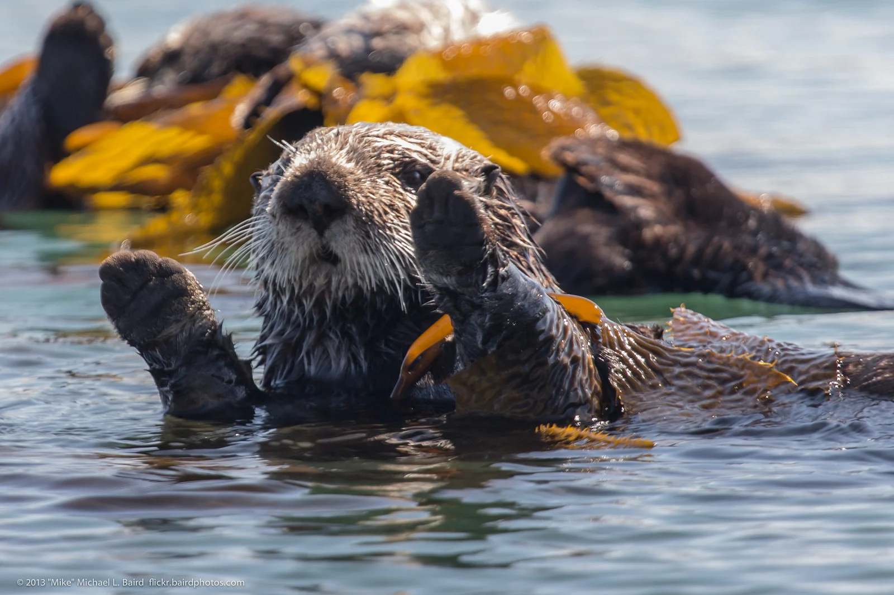

Hello and welcome to my sea otter website.
Sea otters are marine mammals. They tend to be on the coast of California but they are also found on the shores of Alaska, Washington, Russia, and Japan.
They mostly eat crabs snails and urchins and some northern sea otters eat fish.
Some realatives of sea otters are river otters, weasels, and ferrets.
Female sea otters tend to live 15-20 (in the wild)years and male seaotter ten to live 10-15 years (in the wild)
Sea otters tend to live in kelp forests, which are dense underwater ecosystems mostly made up brown algae.
if you'd like to see photos of sea otters or of any on the info on this page please navigate to my Photo Gallery page